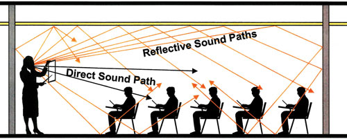
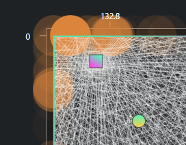

A. Các lí thuyết về phản xạ âm thanh
I. Phản xạ của âm thanh là gì?
Khi âm thanh tiếp xúc một bề mặt bất kì, một phần của nó sẽ được hấp thụ bởi bề mặt vật liệu nó tiếp xúc phần còn lại sẽ được phản xạ trở lại với góc tới bằng góc phản xạ:
II. Phản xạ này ảnh hưởng như thế nào đến sự “tinh khiết” của nguồn âm?
Một số căn phòng cần âm thanh đi từ nguồn âm như (loa, giọng nói,…) đến với tai người một cách chính xác và đầy đủ nhất chẳng hạn như phòng biểu diễn âm nhạc, các studio âm thanh. Chúng ta sẽ muốn hạn chế các vấn đề làm cho âm thanh sai lệch, vấn đề dễ thấy nhất đó chính là phản xạ âm thanh.
Khi một nguồn âm thanh phát ra tiếng động, 1 luồng âm trực tiếp sẽ đi đến tai người nghe, cùng với đó có những luồng âm thanh phụ sẽ đập vào các vật liệu, các bức tường rồi mới đến tai người nghe. Điều này tạo ra một vấn đề làm cho âm thanh ko còn tinh khiết.
Các âm thanh phản xạ sẽ có biên độ, màu sắc cũng như thời gian đến tai người nghe khác với âm thanh trực tiếp khiến cho âm thanh gốc ko còn giữ được thông tin gốc ban đầu.
III. Hạn chế phản xạ âm thanh
Có 2 cách để hạn chế những âm thanh phản xạ:
1. Dùng tiêu âm
Tiêu âm sẽ làm cho biên độ dao động của âm thanh phản xạ giảm xuống khiến cho tỉ lệ giữa âm thanh phản xạ và âm thanh trực tiếp giảm đi nghĩa là giảm sự sai lệch về cách tiếp nhận của người nghe đối với nguồn âm gốc.
2. Dùng tán âm
Tán âm sẽ làm âm thanh được dàn đều ra nhiều phía với biên độ dàn đều không tập trung ở một hướng. Dùng tán âm sẽ làm cho các âm thanh phản xạ mờ đi chứ ko chuyển hóa âm thanh thành nhiệt như dùng tiêu âm, điều này vẫn sẽ khiến cho âm thanh gốc sai lệch đi đôi chút nhưng sẽ mềm mịn hơn so với việc phản xạ ko qua xử lí.

Tất nhiên chúng ta sẽ không muốn tiêu âm hoàn toàn, để lại một căn phòng “chết” (không có sự phản xạ âm) nhưng lắp đặt tiêu âm ở vị trí nào sẽ là một bài toán khó khăn nếu mình ko thể biết đường đi của âm thanh.
Vậy ta phải chọn vị trí lắp tiêu âm như thế nào?
IV. Phương pháp chọn vị trí để tiêu âm cơ bản
Trước khi đến với chọn vị trí cần tiêu âm, ta phải xác định, âm thanh nào cần tiêu âm và âm thanh nào có thể bỏ qua.
Công thức cường độ âm: $$ I = \frac{P} {4 \pi R^2 } $$
Trong đó:
P: công suất của nguồn âm; R: Khoảng cách từ điểm đang xét tời nguồn âm;
Mẫu số của công thức bên vế phải: Diện tích của hình cầu (Khi âm thanh phát ra thì tất cả mọi điểm bao quanh nguồn âm tạo thành bề mặt của hình cầu)
Theo công thức trên, ta biết được cường độ âm tỉ lệ nghịch với bình phương khoảng cách từ nguồn âm đến vị trí nghe.
Vậy âm thanh to nhất đối với người nghe chính là âm thanh trực tiếp, âm thanh to thứ nhì là âm thanh của phản xạ đầu (phản xạ chỉ qua 1 bức tường) và tiếp đến là phản xạ 2,3,4…
Chúng ta có thể dễ dàng tính phản xạ đầu bằng cách giải hình học cơ bản, nhưng với phản xạ 2,3,4 rất khó để tính.
Vì vậy các phương pháp chọn vị trí tiêu âm cơ bản sẽ đánh mạnh vào phản xạ đầu.
V. Những bất cập của phương pháp chỉ tiêu âm phản xạ đầu
Các phản xạ 2 và 3 đương nhiên là sẽ có biên độ nhỏ hơn phản xạ đầu nhưng chúng ta chưa khảo sát đến sự chồng chập của nhiều phản xạ.
Sẽ có trường hợp, nhiều phản xạ 2,3 trở đi cùng có nguồn gốc là một vùng tường nhỏ.
Hoặc chúng ta đã xử lý hết các phản xạ đầu, lúc này vẫn chưa đạt được hiệu quả mong muốn thì chúng ta sẽ phải xử lý tiếp những phản xạ tiếp theo.
B. Reflection Calculator
I. Tổng quan dự án
Reflection Calculator là một phần mềm minh họa/mô phỏng đường đi của âm thanh trong một căn phòng.
II. Ý tưởng ban đầu
Chúng ta dễ dàng tính được vị trí xảy ra phản xạ đầu nhưng rất khó để có tính toán được chính xác điểm nào xảy ra phản xạ 2,3 và hơn thế nữa.
Vì vậy mình đã có một ý tưởng về việc, giả sử nguồn phát phát đi rất nhiều tia âm thanh, mình sẽ truy vết các tia đó để xem tia nào chạm tới vị trí nghe thì mình sẽ đánh dấu tia đó lại và truy ngược về nơi xảy ra phản xạ đầu tiên của nó, đó là nơi mà mình sẽ tiến hành xử lý tiêu âm
III. Khởi tạo
Trước khi đến với thuật toán chi tiết thì chúng ta hãy điểm qua những tham số quan trọng ảnh hưởng đến sự minh họa của âm thanh cũng như các yếu tố khác.
Đầu tiên chính là kích thước phòng: kích thước phòng ảnh hưởng rất nhiều đến hành vi của âm thanh, một căn phòng rộng lớn sẽ có những phản xạ đầu đến rất lâu và biên độ nhỏ hơn nhiều vì quãng được nó đã di chuyển.
Thứ hai chính là vị trí đặt nguồn âm: mỗi vị trí đặt nguồn âm sẽ cho ra các “tia” âm thanh khác nhau.
Tiếp đó là vị trí nghe: tương tự như vị trí nguồn âm, vị trí nghe khác nhau sẽ đón nhận những âm thanh khác nhau. Ví dụ khi ta ngồi sát tường, âm thanh phản xạ sẽ khác khi chúng ta ngồi giữa phòng.
Và vì phần mềm này sẽ hoạt động dựa trên việc tạo ra các tia âm thanh nên số lượng tia sẽ ảnh hưởng rất lớn đến độ chính xác. Ít tia thì độ chính xác thấp nhưng hiệu năng cao, nhiều tia thì ngược lại.
Cuối cùng là hệ số hấp thụ của vật liệu: một bức tường sẽ luôn hấp thụ dao động và chuyển hóa thành nhiệt năng nên khi phản xạ một phần âm thanh đã bị tiêu hao đi, đây là một yếu tố cần phải xem xét trước khi đến với tính toán các điểm phản xạ đầu.
IV. Thuật toán
Chúng ta sẽ chia nguồn âm thành [n] tia, mỗi tia lệch nhau 1 góc 2pi/n rad.
Sau đó chúng ta sẽ vẽ đường đi của các tia, mỗi khi chúng tiếp xúc với bề mặt tường chúng ta sẽ cho tia đó phản xạ lại và tiếp tục cho nó di chuyển tiếp cho đến khi độ lớn của âm thanh tiệm cận về mức có thể bỏ qua hoặc tia âm thanh đó đã chạm tới tai người nghe.
|
|
Với các tia đã thực sự chạm đến người nghe, chúng ta truy ngược về tổng quãng được âm thanh đã di chuyển để tính ra tỉ lệ chênh lệch mức cường độ âm so với âm thanh gốc và nhân với các hệ số hấp thụ của vật liệu.
Tiếp đó vẽ các vòng tròn tại điểm phản xạ đầu của các tia có sự tiếp xúc với vị trí nghe với độ fill bằng với tỉ lệ mức cường độ âm tại điểm tiếp xúc với mức cường độ âm gốc.
V. Thử nghiệm phần mềm
Giả sử chúng ta có một căn phòng có kích thước 4m x 4m, phổ biến với người Việt Nam
Vị trí đặt loa sẽ là 1m, 0.6m
Vị trí người nghe 2m, 2m
Hệ số hấp thụ 0.2
Và số tia âm thanh là 103 tia (ở đây nên chọn số nguyên tố để có thể đưa ra kết quả sát thực tế nhất)
Như hình sau chúng ta nên lắp đặt tiêu âm tại vị trí 1.32m
C. Kết Luận
App này đã thực hiện đúng và đủ ý tưởng ban đầu của mình, nhưng cần cải thiện thêm một số thứ như là như thế nào là một tia âm thanh tiếp xúc với người nghe, các thuật toán nâng cao gia tăng độ chính xác của độ to âm thanh.
Hiện tại các bạn có thể dùng qua phần mềm này tại đây: https://github.com/kpnn0100/ReflectionCalculator